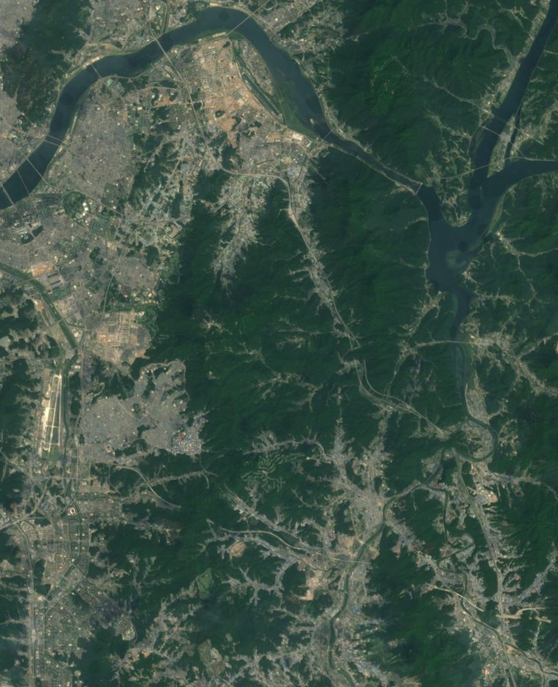

{{ credit }}
{{ name }}
{{ summary }}
- {{ f.value }} {{ f.unit }}
- {{ f.label }}

Sentinel-2 cloudless by EOX IT Services GmbH (Contains modified Copernicus Sentinel data 2016) · 코스 선 © OpenStreetMap contributors
{{ credit }}
{{ summary }}

Sentinel-2 cloudless by EOX IT Services GmbH (Contains modified Copernicus Sentinel data 2016) · 코스 선 © OpenStreetMap contributors